|
|
| shrimps text index | photo index |
| Phylum Arthropoda > Subphylum Crustacea > Class Malacostraca > Order Decapoda > prawns and shrimps > Family Alpheidae |
| Smooth
snapping shrimp Alpheus sp.* Family Alpheidae updated Jan 2020 Where seen? This short and stout snapping shrimp is sometimes seen on many of our shores, in sandy areas near seagrasses and among coral rubble. It is more active at night. During the day, these shrimps usually remain hidden in their burrows. Features: Body length 4-5cm. The shrimp has a smooth body which is usually plain. The enlarged pincer is flattened but rounded, somewhat like a cartoon drawing of a muscle man. Often the 'finger' of the enlarged pincer is orange. This shrimp is sometimes seen in a burrow with large brittle stars. Several different species of snapping shrimps might have this appearance. |
 Pulau Sekudu, Jun 05 |
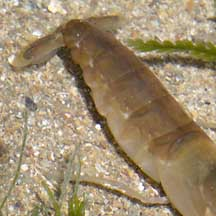 |
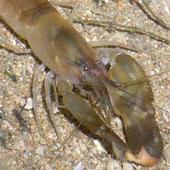 |
|
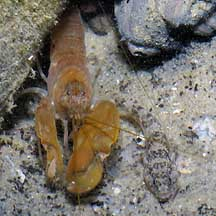 Sharing a burrow with a goby? Changi, Jun 06 |
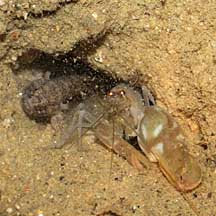 Sharing a burrow with a goby? Pasir Ris Park, Jun 08 |
|
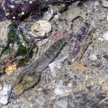 Sharing a burrow with a goby? Pulau Ubin Jetty, Jun 25 Photo shared by Richard Kuah on facebook. |
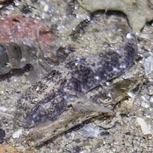 |
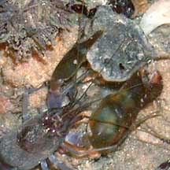 The smaller claw used to carry things. Labrador, May 02 |
|
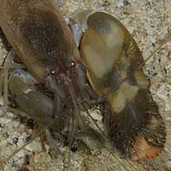 Pulau Hantu, May 09 |
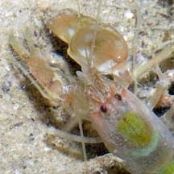 Changi, Jul 04 |
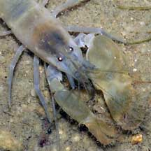 St. John's Island, Sep 09 |
*Species are difficult to positively identify without close examination.
On this website, they are grouped by external features for convenience of display.
| Smooth snapping shrimps on Singapore shores |
On wildsingapore
flickr
|
| Other sightings on Singapore shores |
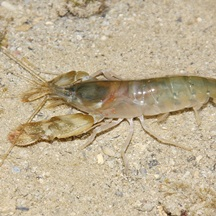 Terumbu Bemban, Jul 11 Photo shared by James Koh on his blog. |
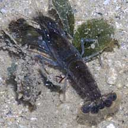 Pulau Senang, Jun 10 |